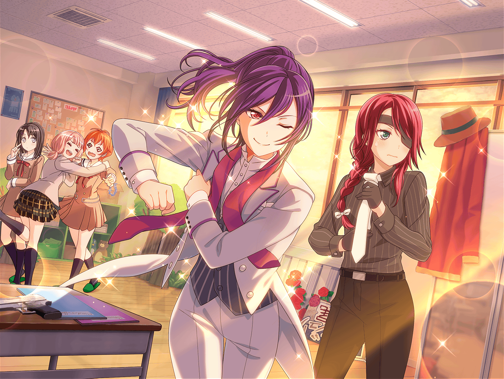

羽丘女子学園 演劇部 部室
薫
『ああ、月よ。その儚い光で、私を照らしておくれ……！』
美咲
はー……すごいね、薫さん
巴
本番が近づいてきてるからかな。
瀬田先輩の演技、どんどん迫力が出てきてるよな
はぐみ
うんうんっ！
なんか、お月様の光が見えてくる気がするくらいっ！
ひまり
ど……どうやったら、薫先輩みたいにできるんですかっ！？
薫
フフ、みんなありがとう
薫
どうやったら、か……そうだね。
演技をするというよりも、
私の場合は、役が降りてくるんだよ
薫
降りてきた役の思うがまま、感じたまま、
その通りに動いているだけさ
巴
だからあんなに、自然な演技になるのか……
役が降りてくるって、すごいですね
ひまり
でも普通の人には真似できなさそう……
うう、私ももっと上手に演技してみたいなぁ
薫
ああ、ひまりちゃん。なんて素晴らしい向上心だ。
高みを目指す君の心は、とても儚く、美しい……
ひまり
そ、そんな……私なんて全然……
もっと頑張って、上手にお芝居できるようになります！
薫
フフ、かわいらしいね。
そうだ、芝居を上達させたいというのなら、
即興劇の練習をするのがいいかもしれないな
美咲
即興って……
もしかして、全部アドリブでやる劇ってこと？
薫
ああ、台本なしで、みんなでお話を進めるんだ。
思いもよらない展開になることも多いから、
瞬発力や、柔軟な思考力が鍛えられるよ
巴
へえ……台本なし、全部アドリブか。
なんか、面白そうだな！
ひまり
どんなお話になるか、
やってみないとわからないってことだよね！
薫
演劇部でも取り入れている練習法でね。
演技が上達すること間違いなしさ。
よかったら、今やってみるかい？
はぐみ
はいはーい！ はぐみも、やりたいやりたい！！
ね、みーくん！
美咲
いや、あたしはパスで……
ここで見てるから、行ってきなよ、はぐみ
薫
即興劇は、簡単なシチュエーションだけ決めて、
それに沿って、みんなが自由に演じていく劇だ
薫
決まったセリフがないから、自然な会話をする練習にもなる。
そこを意識してみるのもいいかもしれないね
ひまり
は、はい……！
頑張ります！
薫
そんなに固くならなくても、大丈夫さ。
まず、自分はどんな役なのかを伝えることから始めよう。
お互いの役に合わせて芝居を続けていくことが大事だからね
薫
では、さっそくやってみよう！
舞台は、そうだな……雪山の山小屋だ！
薫
……おお、なんという吹雪なんだ！
身も心も凍てつかせるほど、
今宵の吹雪は、激しく冷たい……
はぐみ
わあ～っ、すごいすごい！
薫くん、本当に寒そうだよ！
美咲
あんな演技間近で見せられたら、緊張しそう……
上原さん達、大丈夫かな……？
薫
どうにか山小屋に逃げ込むことはできたが……
おや？ 先客がいたのか。君達は？
ひまり
えっ！？ わ、私達ですか！？
私達は〜……そのー、吹雪、吹雪がすごくて、えっと……
巴
そ、そうそう！ 外はすごい吹雪だから、
思わずここに逃げた、えーっと……た、ただの、人！
いやいやいや、えっと、村人です！
ひまり
は、はい！ 村人です！
だから、とにかくここで、あたて……あ、あたたかし、あれ？
あた、あたたたたかく……あ、あれぇっ！？
美咲
か、噛みまくってる……！
やっぱり緊張してるんだ！
薫
落ち着きたまえ、吹雪から逃げてきた村人のお嬢さん方。
このハロハッピー国の王子が来たからには、もう安心だ
巴
えっ……お、王子？
ひまり
わあ、王子様～！！
どうりでとっても素敵なお方だと思いました！
美咲
い、いやいや、上原さん受け入れるの早すぎでしょ！
なんで雪山で王子？ 遭難？
はぐみ
ラーメン、ラーメンだよ～。
あったかくておいしいラーメンだよ～！
やっほー王子様、ラーメン一丁お待ち〜！
薫
ああ、来てくれたんだね！ 待っていたよ！
彼女達にも、温かく儚いラーメンを
食べさせてあげてほしいんだ！
美咲
……はぐみはラーメン屋！？
しかも王子と知り合い！？
はぐみ
もちろん！
たーっくさんあるから、
みんなで食べよう！
ひまり
わぁ～、すっごい美味しそうなラーメン！
ね、巴！ これを食べれば絶対元気になるよ！
巴
あ、ああ、そうだな！
あとは、この雪山から無事に脱出できれば……
美咲
ちょ……世界観とかいろいろめちゃくちゃなんだけど。
全部放置したまま、お芝居続ける気……！？
薫
君達の村は、もしかして山のふもとにあるのかい？
私の国もそうなんだが、この雪では歩いて帰れないな……
はぐみ
それなら、食べ終わったラーメンのどんぶりに乗って、
雪の上を滑っていけばいいんだよ！
薫
さすが、我が国１番のラーメン屋さん！
なんて素晴らしい提案なんだ！ ああ、儚い……！
はぐみ
このどんぶり、十分ソリになる大きさだもん！
ひとつだけでも、みんな乗り込めるよ！
薫
よし、みんなどんぶりに乗れたね？
さあ、今すぐこの雪山から脱出しよう！
美咲
どんぶり大きすぎるし、いつの間にか吹雪止んでるし……！
ああもう、せめて、最後だけでもいいから
つじつまを合わせてほしいんだけど……！
薫
なんだって……君は、行方不明だった隣国の姫！
我が国で、村人に身をやつしていただなんて……！
美咲
……だ、ダメだ。
どんどん話が散らかっていく……！
薫
……こうして王子達は、
幸せのラーメン探しの旅へ出かけたのだった……
はぐみ
めでたし、めでたし！
う～ん、いい話になってよかったね！
巴
いやー、楽しかった！
なんかだんだん、喋るのに抵抗なくなっていってさ、
どんどん話ふくらませちゃったよな！
ひまり
うん、みんなとお芝居するの、すっごく楽しかった！
恥ずかしがってたら話が進まないのもわかったし……
人前でお芝居するの、ちょっとだけ慣れた気がする！
美咲
まあ、最終的には、
はちゃめちゃな話になってたけどね……
薫
フフ、芝居って楽しいだろう？
みんなにも、そのことを知ってもらえたなら嬉しいよ
薫
もちろん、自分の芝居が、子猫ちゃん達に
喜んでもらえることも嬉しいけど……
でも、みんなとは、同じ舞台に立つわけだからね
薫
この感動を仲間と分かち合う……
なんと喜ばしく、儚いことだろうか……！
ひまり
薫先輩……！
私、先輩のためにも、もっともっと練習します！
薫
ありがとう、ひまりちゃん。
それじゃあもう一度、即興劇をやってみようか！
今度は美咲も一緒にね
美咲
えっ、あたしも！？
薫
さっきからずっと参加したくて、むずむずしてただろう？
おいで！ 一緒に素晴らしい物語を作ろうじゃないか！
美咲
……いや、これ、そういうむずむずじゃないから！